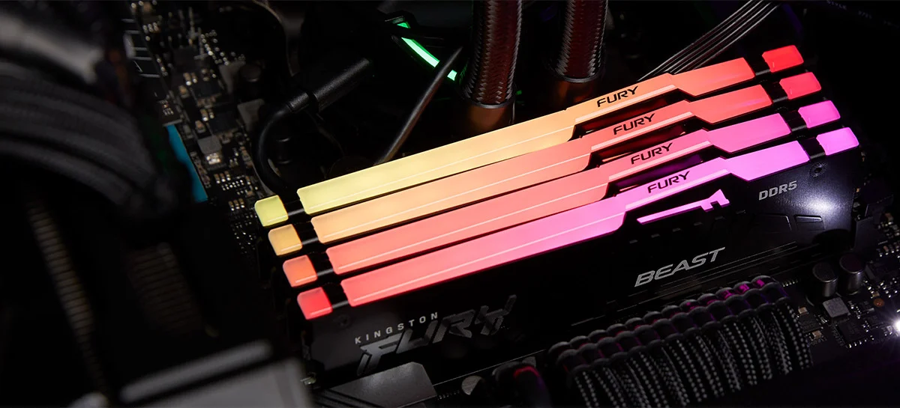

Últimos artigos

REVIEW | Intel Core i5-13400 precisa custar menos que o Ryzen 5 7600 para valer a pena
Tirando alguns testes multicores, o processador da Intel não é páreo pro Ryzen 5 7600
19/03/2023 10:20
update 19/03/23 10:21
Esta é a análise/review dos processadores Intel Core i5-13400 e 13400F, modelos intermediários
da Intel
focados nos consumidores que buscam "o meio do caminho" no line-up da empresa, com bom nível de
performance
para games e também para aplicações profissionais, mas com um preço mais competitivo que
processadores
"final K".

O que é memória RAM?
Saiba para que serve, como funciona e os tipos de memória RAM
24/02/2023 14:00
update 20/03/23 13:12
A ASUS anunciou, no inicio de março, uma placa-mãe com a maioria dos conectores na parte de
baixo do corpo da placa, gerando muita curiosidade pelo impacto que esse tipo de modificação
pode ter. Nessa semana apareceram modelos de mainboards da MSI com o mesmo conceito.

Placas-mãe com conectores na parte de baixo vão mudar o visual de computadores desktop
Asus e MSI produzem primeiros modelos de mainboards com conectores na parte de trás
14/03/2023 17:06
A ASUS anunciou, no inicio de março, uma placa-mãe com a maioria dos conectores na parte de
baixo do corpo da placa, gerando muita curiosidade pelo impacto que esse tipo de modificação
pode ter. Nessa semana apareceram modelos de mainboards da MSI com o mesmo conceito.
Quando formatar o PC e notebook?
Conheça alguns sinais de que está na hora de formatar o computador e notebook
02/03/2023 18:00
Depois de algum tempo de uso, um processo indicado para otimizar o desempenho do PC é a formatar
o
computador. De maneira geral, formatar o PC com Windows é um jeito de renovar completamente o
sistema
operacional e, por isso, o procedimento é indicado como solução de diversos problemas em
desktops e
notebooks. Uma dúvida possível na cabeça dos usuários, no entanto, é: quando formatar o
computador?

Como formatar o PC com Windows?
Veja o passo a passo de como formatar e instalar o Windows no computador
28/02/2023 19:10
Formatar o PC consiste no processo de apagar todos os arquivos do computador, incluindo o
sistema operacional, e instalá-lo novamente. Apesar de ser conhecido, o procedimento é um
desafio considerável para o público menos entendido. Por isso, o Adrenaline resolveu montar um
passo a passo de como formatar o computador, instalando o Windows ao final do processo.

Mesma linha, diferentes GPUs! Comparamos as RTX 40 ASUS ROG Strix!
Como um mesmo projeto dimensiona para diferentes chips gráficos
19/02/2023 14:05
Hoje nós vamos fazer um comparativo diferente. Normalmente colocamos diferentes chips gráficos
para comparar a o desempenho entre múltiplas opções do mercado, ou marcas rivais para ver qual
se sai melhor em performance. Hoje nós vamos ter três modelos da série GeForce RTX 40, mas com
uma coisa em comum: todas são da mesma linha, a ASUS ROG Strix.

GeForce GTX 1060 para HD? Testamos Returnal no PC!
Jogamos desde hardwares de entrada até Ray Tracing
15/02/2023 19:05
Seguindo o caminho de vários exclusivos do Playstation, Returnal também desembarca (ou faz um
pouso de emergência) no PC para a alegria dos fãs de ficção científica, games com muita ação,
jogos do tipo roguelike ou mesmo uma mistura das três coisas. Testamos o jogo para ver como ele
chega no PC, seja em tecnologias, recursos exclusivos e performance.